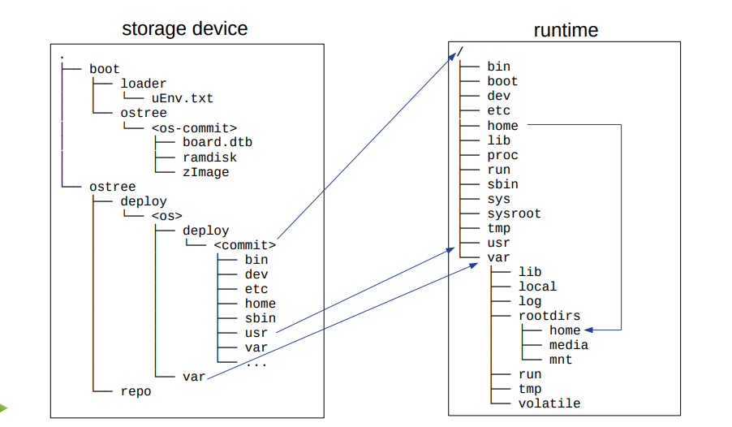
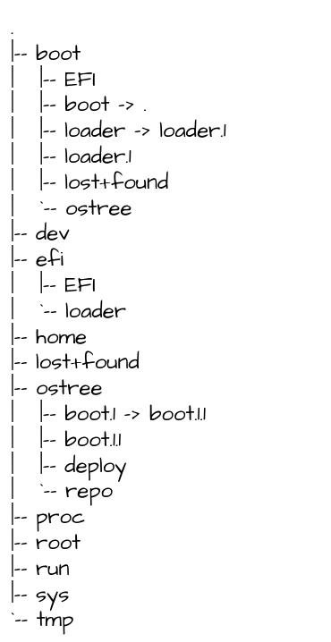

Ostree FileSystem Layout¶
Real root of the filesystem¶
1. Mount the image
root@32b81b5fc0ca:/usr/src/tmp# losetup -f
/dev/loop4
root@32b81b5fc0ca:/usr/src/tmp# losetup --partscan /dev/loop4 elxr-minimal-ostree-amd64-0.1-amd64.img
root@32b81b5fc0ca:/usr/src/tmp/test# losetup -a | grep loop4
/dev/loop4: [2081]:20497246987 (/usr/src/tmp/elxr-minimal-ostree-amd64-0.1-amd64.img)
root@32b81b5fc0ca:/usr/src/tmp# mkdir test
root@32b81b5fc0ca:/usr/src/tmp# systemd-dissect -m /dev/loop4 test/
root@32b81b5fc0ca:/usr/src/tmp# cd test/
root@32b81b5fc0ca:/usr/src/tmp/test# ls
boot dev efi home lost+found ostree proc root run sys tmp
root@32b81b5fc0ca:/usr/src/tmp/test# mount | grep /usr/src/tmp/test
/proc/self/fd/7 on /usr/src/tmp/test type ext4 (rw,nodev,relatime)
/proc/self/fd/6 on /usr/src/tmp/test/boot type ext4 (rw,nodev,relatime)
/proc/self/fd/3 on /usr/src/tmp/test/efi type vfat (rw,nodev,relatime,fmask=0022,dmask=0022,codepage=437,
iocharset=iso8859-1,shortname=mixed,errors=remount-ro)
The original view of the root:
make preparation